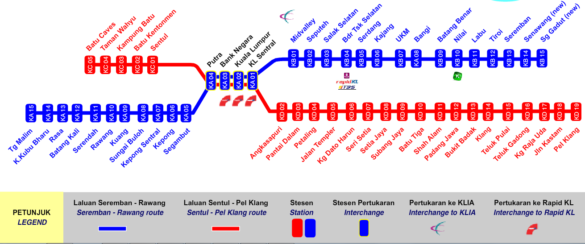

Pick Up Your Transportation
Pick Up Your Transportation
| Route | Departure | Arrival |
| B103 | Titiwangsa | KLCC |
| B112 | Maluri | KL Sentral |
| B114 | Maluri | Titiwangsa via KLCC |
| B115 | HAB Pasar Seni | Jalan Duta |
| Route | Departure | Arrival |
| E11A | Warta Baru, Jalan Ipoh | Wisma Sumber Asli, Persiaran Perdana |
| E11B | Pinggiran Batu Caves | Persiaran Perdana |
| T203 | Stesen LRT Gombak, Jalan Terminal Duta | Pinggiran Batu Caves |
| T204 | Taman Greenwood, Jalan Batu Caves | Kampung Nakhoda, Jalan Nakhoda Kanan via Taman Samudera |
| T205 | Stesen LRT Taman Melati, Persiaran Pertahanan | Setapak Garden |
| T223 | Taman Dato Senu, Jalan Dato Senu 26 | Titiwangsa, Jalan Tun Razak |
| T225 | Kompleks Sungai Mas, Jalan Ipoh | Taman Mastiara, Jalan 1/18B |
| T226 | Stesen LRT Taman Melati | Taman Melewar |
| T229 | Metro Prima | Bandar Baru Selayang |
| T231 | Stesen LRT Gombak | UIA |
| U1 | Pinggiran Batu Caves | Hab Bas, Lebuh Pudu |
| U1 (W) | Pinggiran Batu Caves | Lebuh Pudu |
| U10 | Pinggiran Batu Caves | Lebuh Pudu |
| U11 | Taman Sri Sinar | Bangkok Bank |
| U12 | UIA | Lebuh Ampang |
| U13 | Desa Aman Puri via Taman Ehsan | Medan Pasar |
| U14 | Sri Segambut | Bangkok Bank |
| U2 | Taman Greenwood | Hab Bas, Lebuh Pudu |
| U201 | Batu 12, Gombak | Chow Kit |
| U209 | Taman Selayang jaya | Medan Pasar |
| U222 | Jinjang Utara | Medan Pasar |
| U224 | Bandar Dato Senu | Kotaraya |
| U224 (W) | Bandar Dato Senu | Kotaraya, Jalan Tun Tan Cheng |
| U2A | Flat Taman Pinggiran, Lebuhraya Pinggiran | Hab Bas, Lebuh Pudu |
| U3 | Bandar Baru Selayang, Jalan 2/2 | HSBC, Medan Pasar |
| U4 | Aman Puri, Jalan Wangsa Permai | HSBC, Medan Pasar |
| U5 | Stesen LRT Taman Melati | Lebuh Ampang |
| U6 | Taman Jasa Utama | Medan Pasar |
| U6 (W) | Taman Jasa Utama | Medan Pasar |
| U7 | Mont Kiara / Desa Hartamas | Bangkok Bank |
| U8 | Damansara Damai | Medan Pasar |
| U8 (W) | Damansara Damai | Medan Pasar |
| Route | Departure | Arrival |
| BET7 | Sri Nilam | Jalan Hang Lekiu |
| T301 | Stesen LRT Wangsa Maju | Wangsa Walk / Carrefour |
| T302 | Stesen LRT Wangsa Maju | Seksyen 10, Wangsa Maju |
| T304 | Stesen LRT Wangsa Maju | Taman Melawati |
| T305 | Stesen LRT Wangsa Maju | Ukay Perdana |
| T307 | Stesen LRT Dato Keramat | Ampang Point |
| T309 | Stesen LRT Setiawangsa | Taman Setiawangsa |
| T312 | Stesen LRT Wangsa Maju | UTAR via Jalan Genting Klang |
| T320 | Bukit Indah | Ampang Point |
| T323 | Stesen LRT Cempaka | Tasik Tambahan via Taman Mawar |
| T324 | Stesen LRT Cempaka | Taman Bukit Permai |
| T327 | Taman Shamelin | Maluri |
| T328 | Ampang Point | Stesen LRT Pandan Indah |
| T329 | Taman Dagang | Maluri |
| T330 | Stesen LRT Dato Keramat | Desa Pandan |
| U20 | Taman Melawati | Titiwangsa / Chow Kit |
| U21 | Ukay Perdana, Jalan Ukay Perdana | Chow Kit, Jalan Chow Kit |
| U22 | Sri Nilam | Jalan Hang Lekiu (Lin Ho) |
| U22 (W) | Sri Nilam | Jalan Hang Lekiu (Lin Ho) |
| U23 | Taman Melawati | Lebuh Ampang via MINDEF |
| U24 | Seksyen 2 Wangsa Maju, Jalan 4/27A | Bukit Bintang, HSBC, Jalan Sultan Ismail |
| U25 | Seksyen 10, Wangsa Maju / Stesen LRT Sri Rampai | Lebuh Ampang via Setapak Jaya |
| U26 | Bukit Indah, Ampang | Jalan Hang Lekiu (Lin Ho) |
| U27 | Sri Nilam | Menara Maybank |
| U28 | Taman Mulia Jaya | Jalan Hang Lekiu (Lin Ho) |
| U29 | Taman Mulia Jaya | Jalan Hang Lekiu (Lin Ho) |
| U30 | Pandan Mewah | Jalan Hang Lekiu (Lin Ho) |
| U30 (W)/a> | Pandan Mewah | Jalan Hang Lekiu (Lin Ho) |
| U31 | Pandan Indah | Menara Maybank |
| U31 (W) | Pandan Indah | Menara Maybank |
| U32 | Taman Dagang | Menara Maybank |
| U33 | Ayer Panas | Lebuh Ampang |
| U332 | Lembah Jaya Utara | Garden City Hotel |
| U34 | Stesen LRT Wangsa Maju | Ampang Point |
| U36 | Taman Dagang | Chow Kit |
| Route | Departure | Arrival |
| BET2 | Bandar Sungai Long | Mydin Sinar Kota |
| BET8 | Semenyih Sentral | Mydin Sinar Kota |
| E1 | Putrajaya Sentral | Mydin Sinar Kota |
| T405 | Stesen LRT Bandar Tasik Selatan | Taman Awana Cheras |
| T408 | Stesen LRT Bandar Tasik Selatan | Taman Segar / Taman Bukit Supreme |
| T416 | UPM / Taman Sri Serdang | Stesen KTM Serdang |
| T417 | Taman Sri Pulai | Stesen LRT Sungai Besi |
| T418 | Sri Petaling | Technology Park Malaysia via Bandar Puncak Jalil |
| T421 | Taman Gembira | Stesen LRT Salak Selatan |
| T422 | Stesen LRT Bukit Jalil | Stesen LRT Salak Selatan |
| T424 | Desa Tasik | HUKM via LRT BTS |
| T427 | Cyberjaya Transport Terminal | Lim Kok Wing Universiti |
| T428 | Cyberjaya Transport Terminal | Cyberjaya Park & Ride |
| T430 | UKM | Bandar Kajang |
| T433 | Bandar Sri Permaisuri / HUKM | Stesen LRT Salak Selatan |
| U40 | Terminal Kajang | Mydin Sinar Kota, Jalan Tun Perak |
| U40 (W) | Terminal Kajang | Mydin Sinar Kota, Jalan Tun Perak |
| U41 | Bandar Sungai Long | Mydin Sinar Kota, Jalan Tun Perak |
| U410 | Taman Tun Perak | Kota Raya |
| U411 | Taman Impian Ehsan | Kota Raya |
| U412 | TNB Pangsun, Jalan Hulu Langat | TM Batu 10, Lebuhraya Cheras Kajang |
| U412A | Kampung Ulu Lui, Jalan Sungai Lui | TM Batu 10, Lebuhraya Cheras Kajang |
| U415 | Beranang | Bandar Kajang Prima Saujana |
| U42 | Putrajaya Sentral | Stesen KTM Serdang |
| U423 | HAB Pasar Seni | TUDM Sungai Besi |
| U429 | Cyberjaya Transport Terminal (CTT) | Putrajaya Sentral |
| U43 | Putrajaya Sentral | Bandar Utama |
| U432 | Puncak Jalil | Kota Raya |
| U44 | Bandar Sri Permaisuri | Bukit Bintang |
| U45 | Bandar Tun Razak | Bukit Bintang |
| U46 | Damai Perdana | Bukit Bintang |
| U46 (W) | Damai Perdana | Bukit Bintang |
| U47 | Awana Cheras | Menara Maybank |
| U48 | Desa Petaling | Bukit Bintang |
| U49 | Damai Perdana | Kota Raya |
| Route | Departure | Arrival |
| BET3 | Subang Mewah | HAB Pasar Seni |
| BET4 | Taman Sri Muda | HAB Pasar Seni |
| T505 | Stesen LRT Taman Jaya | Taman Sri Sentosa |
| T507 | Bandar Kinrara | Tesco / IOI Mall |
| T508 | Taman Wawasan Puchong | IOI Mall |
| T509 | Puchong Utama | IOI Mall |
| T510 | Puchong Prima | Puchong Utama |
| T511 | Puchong Prima | IOI Mall |
| T513 | Puchong Utama | Saujana Puchong |
| T515 | Puchong Utama | Pulau Meranti |
| T523 | USJ 8 | Subang Parade |
| T527 | Hentian Bandar Shah Alam | Stesen KTM Batu 3 / Subang Mas |
| T528 | Sri Muda | Hentian Bandar Shah Alam |
| T529 | Hentian Bandar Shah Alam | Seksyen 16 - 17, Shah Alam via Stesen Komuter |
| T530 | Taman Sri Muda | Kota Kemuning |
| T600 | UiTM, Puncak Alam | Bandar Puncak Alam |
| U504 | OG Height | HAB Pasar Seni |
| U60 | Puchong Utama | HAB Pasar Seni |
| U60 (W) | Puchong Utama | HAB Pasar Seni |
| U62 | Klang | Sunway Pyramid |
| U63 | USJ 8 / Subang Mewah | HAB Pasar Seni |
| U64 | Taman Sri Muda | HAB Pasar Seni |
| U65 | Putra Heights / Alam Megah | HAB Pasar Seni |
| U66 | Taman Medan | HAB Pasar Seni |
| U66 (W) | Taman Medan | HAB Pasar Seni |
| U68 | Sri Manja / Sentosa | HAB Pasar Seni |
| U68 (W) | Sri Manja / Sentosa | HAB Pasar Seni |
| U69 | Putra Perdana | HAB Pasar Seni |
| U70 | Puchong Prima | HAB Pasar Seni |
| U71 | Bukit Jalil | HAB Pasar Seni |
| U72 | Taman Desa | HAB Pasar Seni |
| U73 | Taman Overseas Union | HAB Pasar Seni |
| U74 | Pantai Hill Park | HAB Pasar Seni |
| U75 | PJ Old Town | HAB Pasar Seni |
| U75A | Pantai Dalam 22, Jalan Pantai Dalam | HAB Pasar Seni |
| Subang Parade | HAB Pasar Seni |
| Route | Departure | Arrival |
| BET1 | Kota Damansara | HAB Pasar Seni |
| T601 | Hentian Bandar Shah Alam | Seksyen 7, Shah Alam |
| T602 | Hentian Bandar Shah Alam | Seksyen 11, 9, 8, 6, 4, 2 |
| T603 | UiTM Seksyen 2, Shah Alam | UiTM Kampus Utama, Shah Alam |
| T604 | Seksyen 7, Shah Alam | UiTM Kampus Utama, Shah Alam |
| T607 | Stesen LRT Kelana Jaya | Ara Damansara / Lembah Subang |
| T608 | Subang Perdana | Bukit Subang |
| T610 | Subang Bistari / Mahsing | Subang Perdana |
| T622 | Stesen LRT Kelana Jaya | Taman Mayang Mas |
| T624 | Stesen LRT Kelana Jaya | Kelana Centre Point / Stadium MBPJ |
| T625 | Stesen LRT Taman Bahagia | SS6, SS5, SS3 |
| T626 | Stesen LRT Taman Bahagia | Damansara Utama |
| T627 | Stesen LRT Taman Paramount | Kg Tunku Sg Way Seksyen 51A |
| T628 | Stesen LRT Asia Jaya | Sek 14, Sek 17 |
| T628B | Stesen LRT Asia Jaya | Sek 14, Sek 17 |
| T629 | Stesen LRT Asia Jaya | Eastin Hotel |
| T629B | Stesen LRT Asia Jaya | Eastin Hotel |
| T631 | Stesen LRT Universiti | Mid Valley |
| T632 | Bukit Angkasa | Universiti Malaya |
| T633 | Stesen LRT Kerinchi | Pantai Hill Park |
| T634 | Stesen LRT Bangsar | Pusat Bandar Damansara |
| T635 | Stesen LRT Universiti | PPUM |
| U605 | Seksyen 2, Shah Alam | Puncak Perdana |
| U618 | Titiwangsa / Chow Kit | Solaris Duta Kiara |
| U623 | Stesen LRT Kelana Jaya | Sunway Subang Parade |
| U623 (W) | Stesen LRT Kelana Jaya | Sunway Subang Parade |
| U67 | USJ 8 / Taipan | HAB Pasar Seni |
| U80 | UiTM Seksyen 2, Shah Alam | HAB Pasar Seni |
| U80 (W) | UiTM Seksyen 2, Shah Alam | HAB Pasar Seni |
| U81 | Subang Suria / Mahsing | HAB Pasar Seni |
| U81 (W) | Subang Suria / Mahsing | HAB Pasar Seni |
| U82 | Bandar Utama | KL Sentral |
| U82 (W) | Bandar Utama | KL Sentral |
| U83 | KL Sentral | Kompleks Kerajaan Jalan Duta |
| U84 | Kelana Jaya | HAB Pasar Seni |
| U85 | Stesen LRT Taman Paramount / SS2 (SEAPARK) | HAB Pasar Seni |
| U86 | Bandar Utama | Metro Prima |
| U87 | HAB Pasar Seni | Bangsar Park |
| U88 | Kota Damansara | HAB Pasar Seni |
| U89 | Stesen LRT Kelana Jaya | Kota Damansara Seksyen 11, 13, 5, 4 |
| U90 | UiTM, Puncak Alam | UiTM Seksyen 2 / Hentian Bandar Shah Alam |
| U91 | Jalan Pasar | HAB Pasar Seni |
KTM Komuter is the FIRST electric train service in Malaysia. Introduced in August 1995, it connects Kuala Lumpur City Centre with the surrounding of the sub-urban areas such as Tanjung Malim, Rawang, Seremban, Sungai Gadut and Pelabuhan Klang. It has been a popular mode of transport that offers very reasonable fares.
As a professionally run company, Airport Limo has set high standards and makes their acceptance a condition of employment. All drivers and support staff at all levels of the company can therefore be relied upon to provide consistent service as part of Airport Limo's Quality Management System.
tel:1300888989City Line Radio Taxi was incorporated in the year 1993. Our drivers are well trained and can handle customers with care. We have an extensive fleet of taxis running around the Klang Valley, backed with a reliable service track record that has spanned over the past decade.
tel:03 9222 2828was establish on March 2006 with 50 manpower. Our Company operates on taxi coupon counter at the Low-Cost Carrier Terminal (LCCT) located at Kuala Lumpur International Airport (KLIA), KL Sentral (CAT Terminal) and Hentian Duta.Our taxi ranges from budget taxi, premier taxi and family van. Our taxi fare is difference base on type of taxi and it's classification.
tel:03 4043 0659Public Cab Sdn. Bhd. was established in 1989. Beginning from the Klang Valley, our operations quickly expanded to Seremban and Johor Bahru. We are known as Seremban Cab Sdn. Bhd. and Public Cab (JB) Sdn. Bhd. respectively in these two towns. Each of our taxi is less than five years old and is fueled by either Liquid Natural Gas (LNG) for Natural Gas Vehicle (NGV) or Unleaded Petrol as part of our environment care initiative.
tel: 1700-81-9696Sunlight Taxi Group's business include Taxi fleet management and operations, 24 hours Radio call centre, Outdoor Mobile taxi advertising, Natural Gas Tank (NGV) installation and Maintenance Services, Taxi meter trading and maintenance services, Motorcar workshop repair services, Motor insurance agency services, Retailing of Taxis, Taxi Coupon Counter through it's subsidiaries companies..
tel:03 9057 1111Although the name Atherton Cabs has been well established for many years, we believe that the price of progress is to part with with your past. Along with our head office in Atherton, we have recently acquired a second office in Tyldesley and are looking to open a third office in 2011. With this is mind, we thought the time was right to change our name to coincide with this expansion and to have a name that you will remember, hence SUPERCABS.
tel: 03 2095 3399